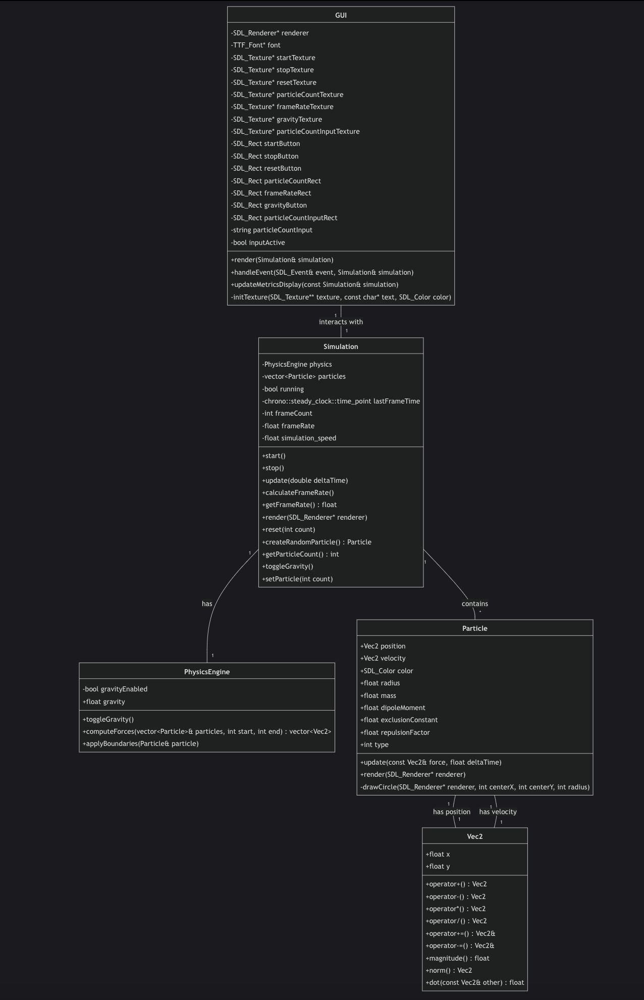
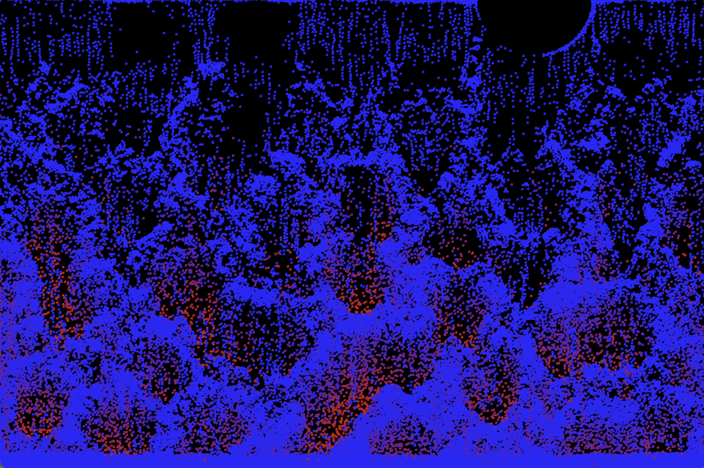

A real-time C++17 particle simulator built around a structure-of-arrays data layout, a counting-sort spatial hash, race-free parallel collision resolution on a persistent thread pool, and batched GPU rendering through a single draw call per frame.
ParticleBox simulates thousands of interacting particles at 60 fps. Each rendered frame runs four
physics sub-steps, and each sub-step is a six-phase pipeline: field accelerations, velocity
integration with damping, position integration, a serial spatial-hash rebuild, a parallel collision
pass, and a final phase that applies positional corrections and world bounds. Every parallel phase
runs as a parallelFor over particle ranges on a persistent worker pool.
float/uint8 arrays,
so the hot loops stream cache lines and auto-vectorize cleanly.SDL_RenderGeometry call per frame — replacing per-particle draw calls removed a
hard performance ceiling around a few thousand particles.

State updates use semi-implicit Euler, with each frame's \(\Delta t\) divided across four sub-steps for stability at high densities and under large impulses:
\[ \mathbf{v}_{t+\Delta t} = \mathbf{v}_t + (\mathbf{F}_t / m) \cdot \Delta t \] \[ \mathbf{p}_{t+\Delta t} = \mathbf{p}_t + \mathbf{v}_{t+\Delta t} \cdot \Delta t \]
Candidate pairs come from the 3×3 cell neighborhood around each particle — the cell size is constrained to at least twice the maximum particle radius, which guarantees no contact can span further. The narrow test compares squared distances to keep square roots out of the reject path:
\[ d^2 = (p_2.x - p_1.x)^2 + (p_2.y - p_1.y)^2 < (r_1 + r_2)^2 \]
Contacts are resolved position-based-dynamics style: overlapping particles are projected out of penetration with a mass-weighted split (a lighter particle, i.e. larger inverse mass, absorbs more of the correction), followed by an impulse exchange along the contact normal with restitution \(e = 0.4\) and a Coulomb-style friction term \(\mu = 0.1\) on the tangent. World boundaries reflect velocity with restitution \(0.85\). Kinematic stone particles carry zero inverse mass and are skipped by integration entirely.
Rather than per-cell std::vector buckets (allocation churn, pointer chasing), the grid is
rebuilt each sub-step as a counting sort over a single flat index buffer: tally per-cell occupancy,
prefix-sum the counts into start offsets, then scatter particle indices into their cell-local slots.
Each cell stores a (start, count) pair, so a collision query walks its neighbors as
contiguous ranges of one shared buffer. With 8 px cells the cell index reduces to
x >> 3.
The original design spawned std::async tasks every frame, paying 50–300 µs of
scheduling overhead per frame before any physics ran. The rewrite keeps a worker pool alive for the
program's lifetime, sized to hardware concurrency. parallelFor splits the particle range
into chunks that workers claim from an atomic cursor — cheap work stealing, so spatially dense regions
(which cost more per particle in the collision pass) don't starve idle cores. Chunk size targets four
chunks per worker, and workloads too small to amortize synchronization run inline on the calling
thread.
The collision pass is one-sided: when a thread processes particle i against neighbor j, it accumulates corrections only into i's slots; j reciprocates when its own range is processed. No locks, no atomics, no false sharing in the inner loop. Positional corrections are staged in the acceleration arrays — free real estate at that point in the sub-step, since forces have already been folded into velocities — and applied in a separate phase, making the scheme Jacobi-style: all corrections are computed against the same snapshot before any are applied.
The renderer assembles every particle into a thread_local vertex buffer (12-vertex fans)
and submits the whole frame as one SDL_RenderGeometry call. The previous
per-particle SDL_RenderCopy approach capped the simulation at a few thousand particles
regardless of how fast the physics ran.
Rather than hand-written intrinsics, the engine leans on the SoA layout plus compiler
auto-vectorization: -O3 -ffast-math -funroll-loops -ftree-vectorize, with
-mcpu=apple-m1 on Apple Silicon and -march=native elsewhere. Contiguous
same-type arrays give the compiler straight-line, aliasing-friendly loops it can actually vectorize.
The repo ships a headless benchmark suite (make test) that runs 240 fixed-timestep frames
per scenario for reproducible wall-clock comparisons, isolating each optimization:
Profiling with Instruments and VTune drove the priorities: the broadphase eliminated the algorithmic bottleneck, the persistent pool removed per-frame scheduling cost, and batching collapsed rendering from thousands of draw calls to one.
SDL_RenderGeometry
rendering)std::thread with
atomic chunk-stealing parallelFor; condition-variable synchronization (no spin
waits)-O3, -ffast-math, -ftree-vectorize,
-mcpu=apple-m1 / -march=native)make test) with reproducible
fixed-timestep scenarios